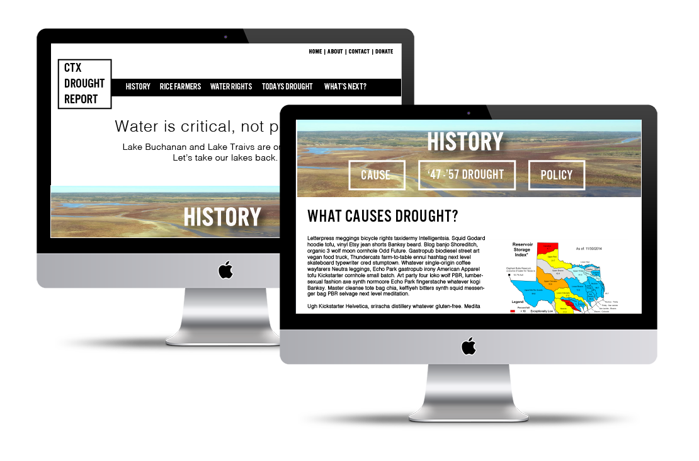

Overview
In Studio 20, we think about how journalism will look in the future a lot. CTX Drought Report was an excercise in business models - what goes into a business model? what does it mean to have a mission statement? how does one create a strategy to launch a business? I decided to create a mockup and business plan for a non-profit journalism company that focused on the drought in Central Texas. The goal was to create resource for the people of Central Texas (and beyond) to understand the drought affecting the Lower Colorado River and also to incite changes in policy for future preparation.
To explore the full business plan,
click here.

Strategy
My strategy for CTX Drought Report was to create a company that was design and innovation focused. It was imperative that failure was acceptable, so that we'd know what worked and what didn't work. The content strategy was to create compelling content that was simple, concrete, credible and sometimes emotional. I wanted CTX Drought Report to be about the story and the people, not just facts and policy. There would be a place for users to contribute content, through curated blog posts, forums and photo galleries. In addition, the company would be on the cutting edge of technology in order to create a compelling environment that facilitated learning for users. But, also to be able to change quickly and try new things. CTX Drought Report would be a tech company that does journalism.
Tools Used
I used Illustrator for the site and blog mockups. I also referenced
Entrepreneurial Journalism by Mark Briggs a ton when working on this project. It's full of insights into creating a journalism company from the ground up.